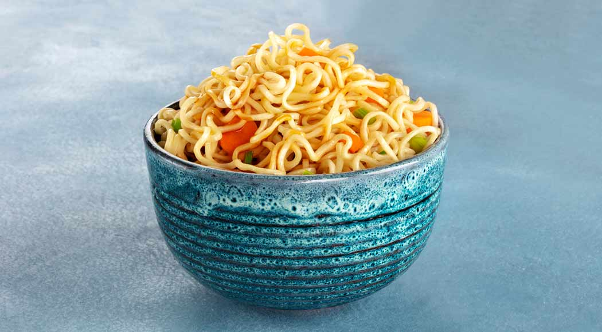

Miojo

Receita:
Essa massa versátil é temperada de diversas maneiras, desde os molhos mais elaborados até os mais simples, que são preparados enquanto você espera o cozimento da massa.
Ingredientes
- 1 pacote de miojo
- Água
- Fogo
- Tempero pronto
- 1 Panela
Passos
- Despeje a água na panela até o suficiente para mergulhar o miojo depois
- Leve a panela com água ao fogo e espere ferver a água
- Coloque o miojo na água fervendo e espere até que ele fique mole
- Retire o excesso de água da panela
- Coloque o tempero e misture com o miojo